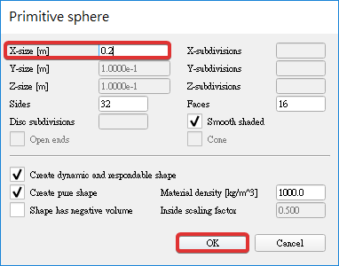
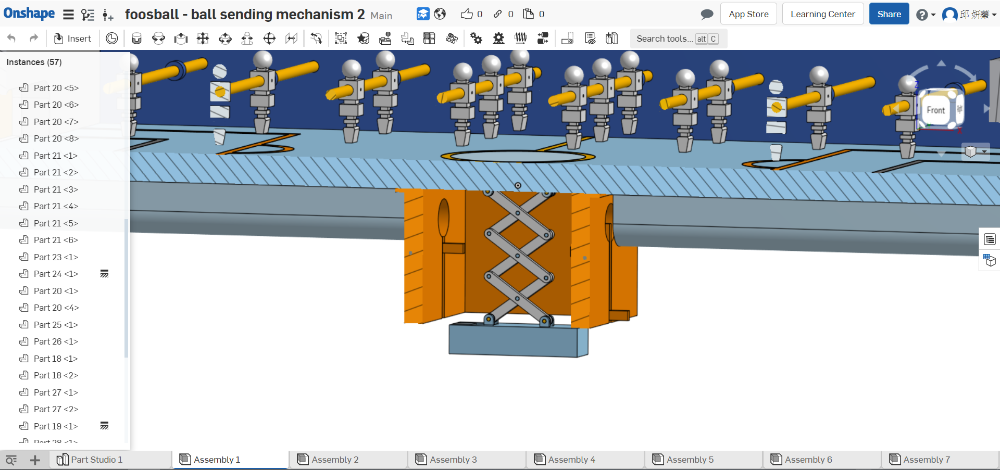
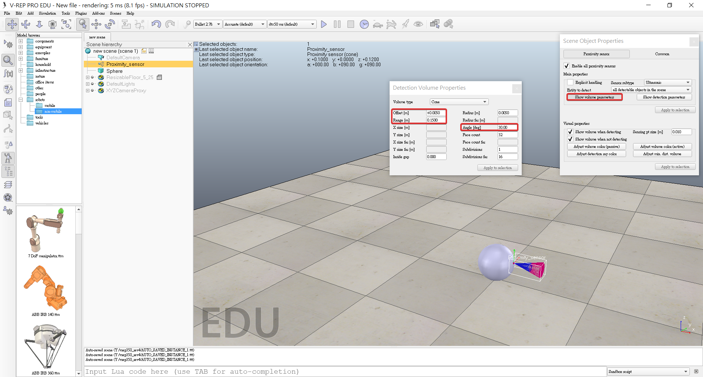
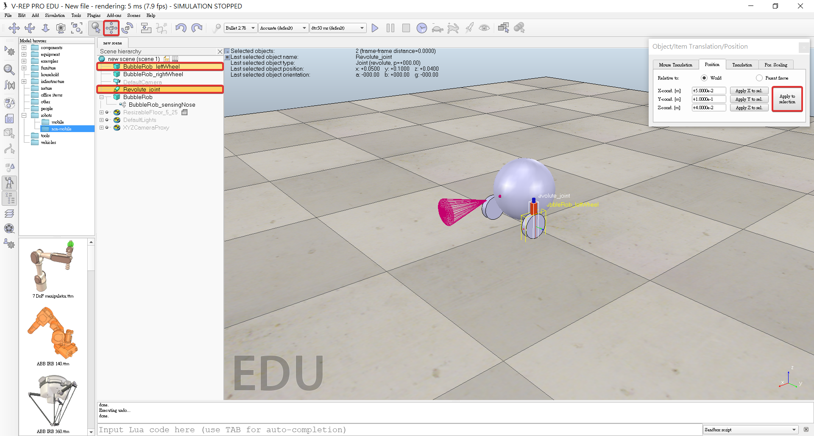
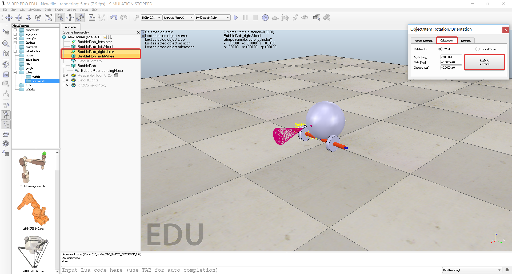
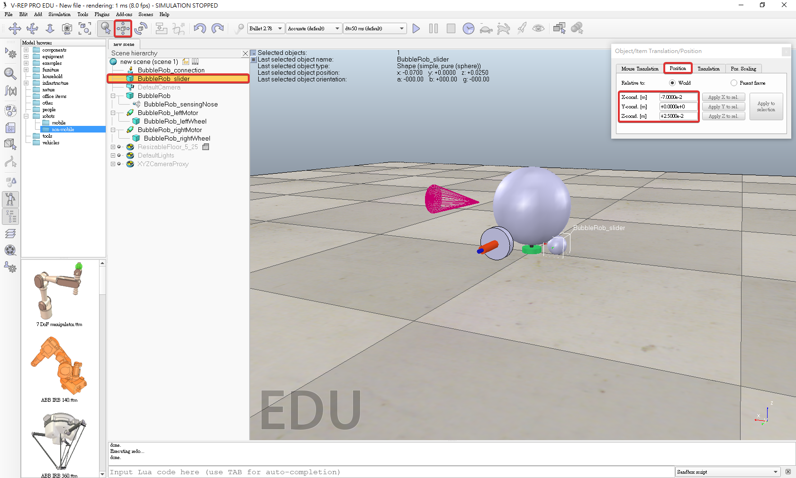
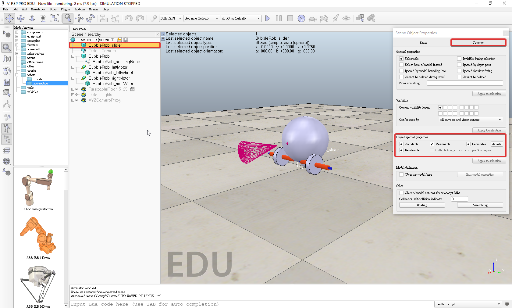

BubbleRob

A. Add a primitive sphere
1. Add a primitive sphere to the scene with [Menu bar --> Add --> Primitive shape --> Sphere]

2. Diameter 0.2, adjust the X-size item to 0.2, then click OK.

3. Enable Collidable, Measurable, Renderable and Detectable in the object common properties for that shape.

4. Click the sphere representing BubbleRob's body.
5. Click translation tab and enter 0.02 for Along Z.
6. Click Translate selection so that all selected objects by 2 cm along the absolute Z-axis.

7. Double-click the sphere's name, edit and enter bubbleRob and press enter.
B. Add a proximity sensor
1. Select [Menu bar --> Add --> Proximity sensor --> Cone type]

2. In the orientation dialog on the orientation tab, we enter 90 for Around Y and for Around Z, then click Rotate selection.

3. In the position dialog, on the position tab, we enter 0.1 for X-coord. and 0.12 for Z-coord.

4. Double-click the proximity sensor's icon in the scene hierarchy to open its properties dialog.
5. Click Show volume parameter to open the proximity sensor volume dialog.
6. Adjust items Offset to 0.005, Angle to 30 and Range to 0.15.

7. Click Show detection parameters in the proximity sensor properties, opens the proximity sensor detection parameter dialog.
8. Uncheck item Don't allow detections if distance smaller than then close that dialog again.

9. Double-click the proximity sensor's name, edit and enter bubbleRob_sensingNose and press enter.
C. Attaches the sensor to the body of the robot
1. Select bubbleRob_sensingNose, then control-select bubbleRob
2. Click [Menu bar --> Edit --> Make last selected object parent]
1. + 2. => Can also drag bubbleRob_sensingNose onto bubbleRob in the scene hierarchy.

D. Add BubbleRob's wheels
1. Add a pure primitive cylinder with [Menu bar --> Add --> Primitive shape --> Cylinder]

2. Dimensions (0.08,0.08,0.02)

3. Enable Collidable, Measurable, Renderable and Detectable in the object common properties for that cylinder.

4. Set the cylinder's absolute position to (0.05,0.1,0.04)
5. Absolute orientation to (-90,0,0)
6. Change the name to bubbleRob_leftWheel
7. Copy and paste the wheel
8. Set the absolute Y coordinate of the copy to -0.1

9. Rename the copy to bubbleRob_rightWheel
E. Add joints (or motors) for the wheels
1. Click [Menu bar --> Add --> Joint --> Revolute] to add a revolute joint to the scene

2. Keep the joint selected, then control-select bubbleRob_leftWheel
3. In the position dialog, on the position tab, we click the Apply to selection button: this positioned the joint at the center of the left wheel.

4. In the orientation dialog, on the orientation tab, we do the same: this oriented the joint in the same way as the left wheel.

5. Rename the joint to bubbleRob_leftMotor
6. Double-click the joint's icon in the scene hierarchy to open the joint properties dialog.
7. click Show dynamic parameters to open the joint dynamics propertiesdialog.
8. Enable the motor, and check item Lock motor when target velocity is zero.

9. Repeat the same procedure for the right motor and rename it to bubbleRob_rightMotor.



10. Attach the left wheel to the left motor.
11. Attach the right wheel to the right motor.
12. Attach the two motors to bubbleRob.
F. Add a small slider (or caster)
1. Add a pure primitive sphere with diameter 0.05
2. Enter -0.07 for X-coord

3. Click the sphere Collidable, Measurable, Renderable and Detectable

4. Rename it to bubbleRob_slider
5. Set the Material to noFrictionMaterial in the shape dynamics properties
G. Add a force sensor
1. Click [Menu bar --> Add --> Joint --> Revolute] to add a force sensor
2. Rename it to bubbleRob_connection
3. Enter -0.07 for X-coord, 0.05for Z-coord
4. Attach it to the robot body
H. Avoid bubbleRob_slider and bubbleRob colliding with each other
1. In the shape dynamics properties, for bubbleRob_slider we set the local respondable mask to 00001111
2. For bubbleRob, we set the local respondable mask to 11110000
I. Stability of dynamic simulations is tightly linked to masses and inertias of the involved non-static shapes.
1. Select the two wheels and the slider, and in the shape dynamics dialog we click three times M=M*2 (for selection)
2. All selected shapes will have their masses multiplied by 8
3. Run the simulation again
4. In the joint dynamics dialog, we set the Target velocity to 50 for both motors.
J. Define a collection of objects that represent BubbleRob
1. Click [Menu bar --> Tools --> Collections] to open the collection dialog or open the dialog by clicking the appropriate toolbar button
2. In the collection dialog, we click Add new collection.
3. Select bubbleRob in the scene hierarchy
4. Click Add in the collection dialog
5. Collection is now defined as containing all objects of the hierarchy tree starting at the bubbleRob object (the collection's composition is displayed in the Composing elements and attributes section)
6. To edit the collection name, we double-click it, and rename it to bubbleRob_collection.
K. Track the minimum distance between BubbleRob and any other object
1. Open the distance dialog with [Menu bar --> Tools --> Calculation module properties] or open the calculation module properties dialog with the appropriate toolbar button
2. In the distance dialog, click Add new distance object and select a distance pair: [collection] bubbleRob_collection - all other measurable objects in the scene.
3. Added a distance object that will measure the smallest distance between collection bubbleRob_collection (i.e. any measurable object in that collection) and any other measurable object in the scene.
4. Rename the distance object to bubbleRob_distance with a double-click in its name
L. Add a graph
1. Click [Menu bar --> Add --> Graph]
2. Rename it to bubbleRob_graph
3. Attach the graph to bubbleRob
4. Set the graph's absolute coordinates to (0,0,0.005)
5. Open the graph properties dialog by double-clicking its icon in the scene hierarchy
6. Uncheck Display XYZ-planes
7. Click Add new data stream to record and select Object: absolute x-position for the Data stream type, and bubbleRob_graph for the Object / item to record
8. Data stream of bubbleRob_graph's absolute x-coordinate (i.e. the bubbleRobGraph's object absolute x position will be recorded).
9. Record the y and z positions: we add those data streams in a similar way as above.
10. Click Add new data stream to record and select Distance: segment length for the Data stream type, and bubbleRob_distance for the Object / item to record
11. In the Data stream recording list, we now rename Data to bubbleRob_x_pos, Data0 to bubbleRob_y_pos, Data1 to bubbleRob_z_pos, and Data2 to bubbleRob_obstacle_dist.
12. Select bubbleRob_x_pos, bubbleRob_y_pos and bubbleRob_z_pos in the Data Stream recording list and in the Time graph properties section, uncheck Visible
13. Only the bubbleRob_obstacle_dist data stream will be visible in a time graph
14. Set-up a 3D curve that displays BubbleRob's trajectory
15. Click Edit 3D curves to open the XY graph and 3D curve dialog
16. Click Add new curve
17. In the dialog that pops open, we select bubbleRob_x_pos for the X-value item, bubbleRob_y_pos for the Y-value item and bubbleRob_z_pos for the Z-value item.
18. Rename the newly added curve from Curve to bubbleRob_path
19. Check the Relative to world item and set Curve width to 4
M. Add a pure primitive cylinder
1. Add a pure primitive cylinder with [Menu bar --> Add --> Primitive shape --> Cylinder]
2. Dimensions: (0.1, 0.1, 0.2)
3. Click the object translation toolbar button
4. Drag any point in the scene: the cylinder will follow the movement
5. Copy and paste the cylinder a few times
6. Move them to positions around BubbleRob (it is most convenient to perform that while looking at the scene from the top)
7. During object shifting, holding down the shift key allows to perform smaller shift steps. Holding down the ctrl key allows to move in an orthogonal direction to the regular direction(s).
8. Select the camera pan toolbar button
N. Finish BubbleRob as a model definition
1. Select the model base (i.e. object bubbleRob)
2. Check items Object is model base and Object/model can transfer or accept DNA in the object common properties: there is now a stippled bounding box that encompasses all objects in the model hierarchy.
3. Select the two joints, the proximity sensor and the graph, the proximity sensor and the graph
4. Don't show as inside model selection and click Apply to selection
5. The model bounding box now ignores the two joints and the proximity sensor
6. Disable camera visibility layer 2
7. Enable camera visibility layer 10 for the two joints and the force sensor
8. This effectively hides the two joints and the force sensor, since layers 9-16 are disabled by default
9. Select the vision sensor, the two wheels, the slider, and the graph
10. Select base of model instead
O. Add a vision sensor
1. Click [Menu bar --> Add --> Vision sensor --> Perspective type]
2. Attach the vision sensor to the proximity sensor
3. Set the local position and orientation of the vision sensor to (0,0,0)
4. Open its properties dialog
5. Set the Far clipping plane item to 1, and the Resolution x and Resolution y items to 256 and 256
6. Open the vision sensor filter dialog by clicking Show filter dialog
7. Select the filter component Edge detection on work image and click Add filter
8. Position the newly added filter in second position (one position up, using the up button)
9. Double-click the newly added filter component and adjust its Threshold item to 0.2, then click OK
P. Add a floating view to the scene,
1. Right-click [Popup menu --> View --> Associate view with selected vision sensor] (we make sure the vision sensor is selected during that process)
Q. Add a small child script that will control BubbleRob's behavior
1. Click [Menu bar --> Add --> Associated child script --> Non threaded]
2. Opened with [Menu bar --> Tools --> Scripts] or through the appropriate toolbar button.
3. Double-click the little script icon that appeared next to bubbleRob's name in the scene hierarchy
4. Copy and paste following code into the script editor
BubbleRob Program：
function sysCall_init()
-- do some initialization here:
-- Make sure you read the section on "Accessing general-type objects programmatically"
-- For instance, if you wish to retrieve the handle of a scene object, use following instruction:
--
-- handle=sim.getObjectHandle('sceneObjectName')
--
-- Above instruction retrieves the handle of 'sceneObjectName' if this script's name has no '#' in it
--
-- If this script's name contains a '#' (e.g. 'someName#4'), then above instruction retrieves the handle of object 'sceneObjectName#4'
-- This mechanism of handle retrieval is very convenient, since you don't need to adjust any code when a model is duplicated!
-- So if the script's name (or rather the name of the object associated with this script) is:
--
-- 'someName', then the handle of 'sceneObjectName' is retrieved
-- 'someName#0', then the handle of 'sceneObjectName#0' is retrieved
-- 'someName#1', then the handle of 'sceneObjectName#1' is retrieved
-- ...
--
-- If you always want to retrieve the same object's handle, no matter what, specify its full name, including a '#':
--
-- handle=sim.getObjectHandle('sceneObjectName#') always retrieves the handle of object 'sceneObjectName'
-- handle=sim.getObjectHandle('sceneObjectName#0') always retrieves the handle of object 'sceneObjectName#0'
-- handle=sim.getObjectHandle('sceneObjectName#1') always retrieves the handle of object 'sceneObjectName#1'
-- ...
--
-- Refer also to sim.getCollisionhandle, sim.getDistanceHandle, sim.getIkGroupHandle, etc.
end
function sysCall_actuation()
-- put your actuation code here
--
-- For example:
--
-- local position=sim.getObjectPosition(handle,-1)
-- position[1]=position[1]+0.001
-- sim.setObjectPosition(handle,-1,position)
end
function sysCall_sensing()
-- put your sensing code here
end
function sysCall_cleanup()
-- do some clean-up here
end
-- You can define additional system calls here:
--[[
function sysCall_suspend()
end
function sysCall_resume()
end
function sysCall_dynCallback(inData)
end
function sysCall_jointCallback(inData)
return outData
end
function sysCall_contactCallback(inData)
return outData
end
function sysCall_beforeCopy(inData)
for key,value in pairs(inData.objectHandles) do
print("Object with handle "..key.." will be copied")
end
end
function sysCall_afterCopy(inData)
for key,value in pairs(inData.objectHandles) do
print("Object with handle "..key.." was copied")
end
end
function sysCall_beforeDelete(inData)
for key,value in pairs(inData.objectHandles) do
print("Object with handle "..key.." will be deleted")
end
-- inData.allObjects indicates if all objects in the scene will be deleted
end
function sysCall_afterDelete(inData)
for key,value in pairs(inData.objectHandles) do
print("Object with handle "..key.." was deleted")
end
-- inData.allObjects indicates if all objects in the scene were deleted
end
--]]
function speedChange_callback(ui,id,newVal)
speed=minMaxSpeed[1]+(minMaxSpeed[2]-minMaxSpeed[1])*newVal/100
end
function sysCall_init()
-- This is executed exactly once, the first time this script is executed
bubbleRobBase=sim.getObjectAssociatedWithScript(sim.handle_self) -- this is bubbleRob's handle
leftMotor=sim.getObjectHandle("bubbleRob_leftMotor") -- Handle of the left motor
rightMotor=sim.getObjectHandle("bubbleRob_rightMotor") -- Handle of the right motor
noseSensor=sim.getObjectHandle("bubbleRob_sensingNose") -- Handle of the proximity sensor
minMaxSpeed={-50*math.pi/180,300*math.pi/180} -- Min and max speeds for each motor
backUntilTime=1 -- Tells whether bubbleRob is in forward or backward mode
-- Create the custom UI:
xml = '<ui title="'..sim.getObjectName(bubbleRobBase)..' speed" closeable="false" resizeable="false" activate="false">'..[[
<hslider minimum="0" maximum="100" onchange="speedChange_callback" id="1"/>
<label text="" style="* {margin-left: 300px;}"/>
</ui>
]]
ui=simUI.create(xml)
speed=(minMaxSpeed[1]+minMaxSpeed[2])*0.5
simUI.setSliderValue(ui,1,100*(speed-minMaxSpeed[1])/(minMaxSpeed[2]-minMaxSpeed[1]))
end
function sysCall_actuation()
result=sim.readProximitySensor(noseSensor) -- Read the proximity sensor
-- If we detected something, we set the backward mode:
if (result>0) then backUntilTime=sim.getSimulationTime()+4 end
if (backUntilTime<sim.getSimulationTime()) then
-- When in forward mode, we simply move forward at the desired speed
sim.setJointTargetVelocity(leftMotor,-speed)
sim.setJointTargetVelocity(rightMotor,-speed)
else
-- When in backward mode, we simply backup in a curve at reduced speed
sim.setJointTargetVelocity(leftMotor,speed/2)
sim.setJointTargetVelocity(rightMotor,speed/8)
end
end
function sysCall_cleanup()
simUI.destroy(ui)
end
Finish
V-rep Tutorial << Previous Next >> V-rep Table Football